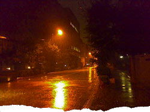

 image: 健司“悲しくて歩けないという気持ちを初めて知った夜”
どこだったっけ……。
ぼんやりと考えている。携帯電話[1]の小さなモニターの中の風景が頭の中いっぱいに広がったとき、夏の終わりにしては肌寒く感じた空気と、そう感じたのは冷たい雨のせいだけじゃなかったあの夜を思い出す。
携帯電話のカメラを使う習慣はあまりなく、メモリーの中には仕事で使う資料を撮影したものが数枚あるだけ。その中にオレンジ色の暗い夜の写真を見つけたとき、そのときの気持ちをはっきりと思い出した。
忘れていたことに少しだけ戸惑い、同時に少し胸が熱くなる。
台風が近づき、広重[2]の絵のような、細い雨が横殴りに降っている。悲しくて歩けないという気持ちを初めて知った夜、それでも重い足を引きずるようにいつもの帰り道を歩いていた。ふと対向車線から走ってくるタクシーのヘッドライトにつられて、うしろを振り返る。
見たことのない、なんでもない風景だった。
毎朝見ているはず[3]なのに、そこにあるのは、初めて訪れたどこか知らない国のなんでもない夜の風景。あまりに意外な風景が、唐突に胸に染みこむ。あたたかい、と思った。無意識のうちにズボンの前の左ポケットから携帯電話を取り出し、一枚だけ写真を撮った。
そうだ。あのときに決めたんだ。自分も含めて、もうだれも責めるのはよそうって。
唇の端に少しだけ笑みを浮かべると、他の写真と一緒に削除ボタンを押した。
referenced works
- 携帯電話：2007年現在、最も普及したウェアラブル・コンピュータであろう。ハードそのものではなく、そこにメモリーされているデータそのものに重要な価値がある機械。パーソナル・コンピュータは、パーソナルと言いながらも、複数の人が共有する場合がある。しかし、携帯電話は、厳密な意味で個人専用機であり、常に持ち主と共にあり、その持ち主の様々な過去を記録していく。 ↩
- 広重：歌川広重（安藤広重とも）。1797年（寛政9年）～1858年（安政5年）。江戸と京都を結ぶ53の宿場を描いた『東海道五十三次』は、あまりにも有名。見果てぬ場所に想いを馳せるよすがとして、当時の人々に受け入れられたことだろう。時を越えられぬ我々もまた、訪れることのできぬ往時へと、想いを馳せられる。 ↩
- 毎朝見ているはず：毎日定期的に通る道。通勤、通学など、同じ道を同じ時刻に通る必要性のある人にとって、その道は、その時刻に限定された風景となる。いわば、記憶に馴染む景色であろうか。馴染みがあるからこそ、そこに違和感もまた生ずるのである。 ↩
location information
- 場所: 千代田区五番町ソニー・ミュージックの前
- 時間: 夜
- 緯度: 35.697595
- 経度: 139.73897
- 地図: Google Maps
016 “ポツンと東京を見下ろすその姿は気高く、とても真摯だ。”
015 “光に彩られて先輩の横顔が、綺麗に染まる.。”
014 “悲しくて歩けないという気持ちを初めて知った夜”
013 “私たちの声だけが静かに揺れた”
012 “細くぐるりと指を囲む、日焼けをしていない左手の薬指の根元”
011 “涙を流しながら煙を吐く彼の隣”
010 “幼い耳には雑音にしか聴こえない音楽に興味が湧いた”
009 “今年も蕎麦が食べられるなぁ”
008 “お堀に映った月をみんなで見てる”
007 “バッグの中だけがつめたいまま”
006 “ほぼ満員の客がざわざわと寿司を食らっている”
005 “向かい合って、仁王立ち”
004 “なんでもないたった6畳の白い部屋”
003 “昔の彼女がスーツを着てモデルをしてた”
002 “電車が悪いんです”
001 “どこで彼女とセックスをするのかは、東京の子供にとっては問題です”

Write for Us!
広い東京の中に、あなたの思い出を刻んでみませんか？ あの日、あの場所で体験した、あの出来事。あなたにとって忘れられない思い出を、短い物語にして送ってください。
commentary